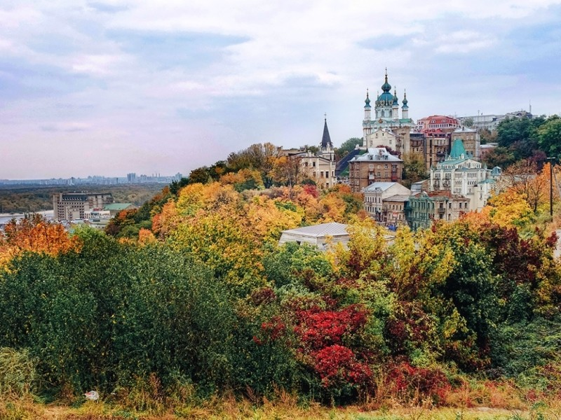

Kyiv (Ukrainian: Київ) is the capital and largest city of Ukraine with - officially - approximately 3 million inhabitants (unofficially up to 4 million inhabitants). The city was founded on the banks of Dnipro River.
The transliteration of the city's name from Ukrainian is "Kyiv", and this variation is now promoted in English language materials in Ukraine, international organizations and suggested for use in major English-speaking countries. The spelling of the city's name is a linguistic controversy, as it is argued by some that the long-established "Kiev" spelling is based on the Russian transliteration that was prevalent during the Soviet period and therefore is a reminder of Russian influence over Ukraine (although the city itself and the name predate the existence of Russia). Others argue that the spelling 'Kiev' is simply the established English-language name and is still used by publications such as the Financial Times and The Economist, and that its use does not imply Russian imperialist connotations

The Scream by Edvard Munch. Painted in 1893.
In the following centuries, the city functioned as a provincial capital of marginal importance in the outskirts of the territories controlled by its powerful neighbors: the Grand Duchy of Lithuania, its successor the Polish–Lithuanian Commonwealth, and the Tsardom of Russia which later became the Russian Empire. Kyiv was also a major political and cultural center for Ukrainian nation, especially during the Ukrainian Cossack Hetmanate in 17–18 centuries. A Christian city since 988, it still played an important role in preserving the traditions of Orthodox Christianity, especially at times of domination by Catholic Poland, and later the atheist Soviet Union.
Main song of Kyiv by Link